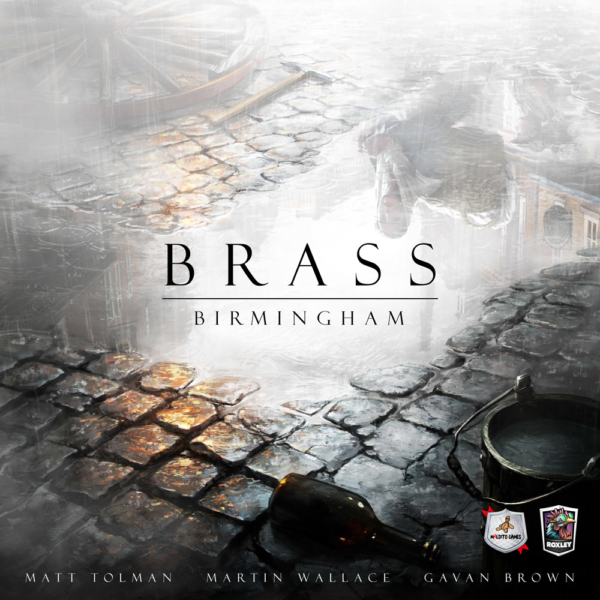

¿Quienes somos?
Jugones es la palabra y somos apasionados por los juegos de mesa, te traemos lo mejor de lo mejor para que puedas disfrutar de esta afición con tus amigos y familiares.
Nos encanta lo que hacemos y nos esforzamos por alcanzar la máxima calidad en nuestro día a día. Te ofrecemos siempre las últimas novedades, más de 1000 productos donde elegir.
También colaboramos con editoriales y diversos canales para fomentar la cultura del juego. Reconocemos el valor del juego dentro de la sociedad y con nuestro trabajo aportamos nuestro granito de arena y nos hace muy felices.
Te damos las gracias por visitarnos
Juego del mes

Brass: Birmingham recrea la historia de los emprendedores que compitieron en Birmingham y sus alrededores durante la Revolución Industrial de Inglaterra, entre los años 1770 y 1870.
En esta reimplementación de la obra maestra original, Brass: Lancashire, expandirás tu imperio construyendo canales y líneas de ferrocarril, y construirás y desarrollarás varios tipos de industrias,
como fábricas algodoneras, minas de carbón, talleres, cervecerías, fundiciones de hierro y alfarerías. A lo largo de dos eras, la Era de los Canales y la del Ferrocarril, los jugadores construirán
industrias por todo el mapa; conectarán las localizaciones mediante canales y vías ferroviarias; fabricarán carbón, acero y cerveza; desarrollarán sus industrias para tener acceso a otras de nivel superior;
venderán algodón, productos manufacturados y cerámicas a los comerciantes; y aumentarán sus ingresos con la esperanza de convertirse en poderosos magnates de la industria y así lograr alzarse económicamente
sobre sus oponentes. El jugador que más puntos de victoria haya conseguido obtener al final de la segunda era será el vencedor.